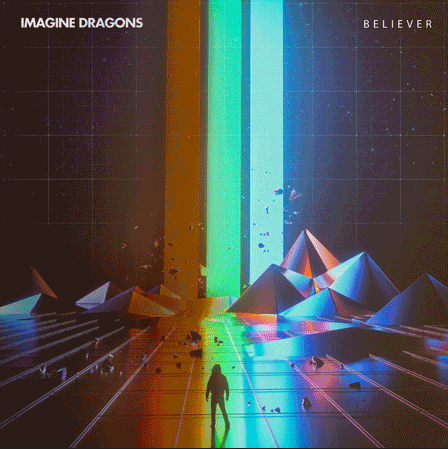
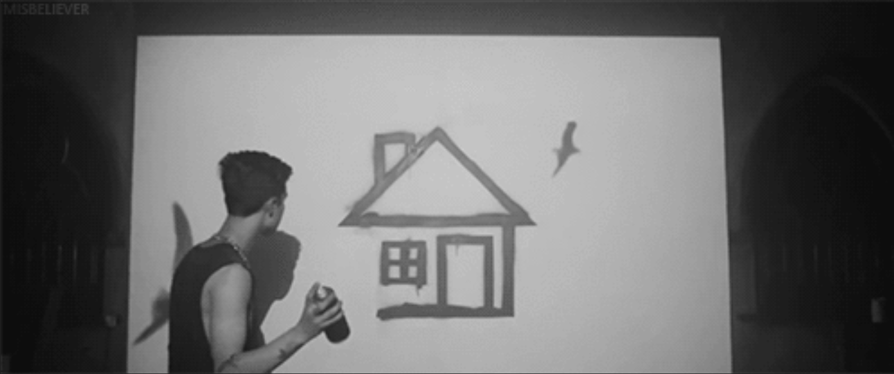
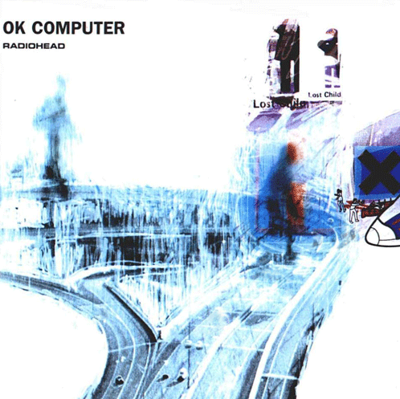

<!DOCTYPE html>

<html>
<head>
    <meta charset="utf-8">
    <meta http-equiv="X-UA-Compatible" content="IE=edge">
    <title></title>
    <meta name="description" content="">
    <meta name="viewport" content="width=device-width, initial-scale=1">
    <link href="style.css" rel="stylesheet" type="text/css">
</head>
<body>
    <script src="" async defer></script>
</body>
</html>

<!DOCTYPE html>
<html lang="en">

<head>
    <meta charset="UTF-8">
    <meta name="viewport" content="width=device-width, initial-scale=1.0">
    <title>Music Player</title>
    <link href="https://cdn.jsdelivr.net/npm/bootstrap@5.3.3/dist/css/bootstrap.min.css" rel="stylesheet"
        integrity="sha384-QWTKZyjpPEjISv5WaRU9OFeRpok6YctnYmDr5pNlyT2bRjXh0JMhjY6hW+ALEwIH" crossorigin="anonymous">
    <link rel="stylesheet" href="https://cdn.jsdelivr.net/npm/bootstrap-icons@1.11.3/font/bootstrap-icons.min.css">
    <link rel="stylesheet" href="https://fonts.googleapis.com/css?family=Josefin+Slab:ital,wght@0,100..700;">
    <link rel="stylesheet" href="https://fonts.googleapis.com/css?family=Josefin+Sans:ital,wght@0,100..700;">
</head>

<body>

        <style>
            .volume-slider {
                width: 0;
                opacity: 0;
                transition: opacity 0.5s ease, width 0.5s ease;
            }

            .volume-control-container:hover .volume-slider{
                width: 100%;
                opacity: 1;
            }
            .text-justify {
                text-align: justify;
                text-justify: inter-word;
            }
        </style>

        <div class="main-container row d-flex align-items-center mx-auto">

            <div id="first-column" class="col-lg-12 col-md-12 col-sm-12">
                
                <div id="card" class="card mx-auto my-3 p-0 text-white text-center">
                    
                    <audio id="musicPlayer" src="musica/believer.mp3" hidden></audio>
                    
                    
                    <div class="card-body">
                        <div class = "heart-info-container">
                            <button id="heartButton" class="btn btn-lg">
                                <i id="likeDislikeIcon" class="bi bi-heart"></i>
                            </button>
                            <button id="infoButton" class="btn btn-lg">
                                <i class="bi bi-info-circle-fill"></i>
                            </button>
                        </div>

                        <h4 id="song-name">Believer</h5>
                        <h6 id="singer-name" class="my-2">Imagine Dragons</h6>

                        <div id="volumeContainer" class="mt-4 volume-control-container d-flex align-items-center justify-content-center">
                            <i class="bi bi-volume-down-fill"></i>
                            <input type="range" id="volumeControl" class="form-range volume-slider" min="0" max="1" step="0.1" value="1">
                            <i class="bi bi-volume-up-fill"></i>
                        </div>

                        <div id="progressContainer" class="progress" role="progressbar" aria-label="Basic example" aria-valuenow="0" aria-valuemin="0" aria-valuemax="100" style="background-color: #834703">
                            <input class="progress-bar" type="range" id="progressSlider" class="form-range" min="0" max="100" value="0" step="1" style="width: 100%;">
                        </div>
                        <div class="d-flex justify-content-between">
                            <span id="currentTime">0:00</span>
                            <span id="totalDuration">0:00</span>
                        </div>

                        <div class="buttons-container d-flex justify-content-center">
                            <button id="prev-track" class="btn btn-lg">
                                <i class="bi bi-skip-start-fill"></i>
                            </button>
                            <button id="playButton" class="btn btn-lg mx-0">
                                <i id="playPauseIcon" class="bi bi-play-circle-fill"></i>
                            </button>
                            <button id="next-track" class="btn btn-lg">
                                <i class="bi bi-skip-end-fill"></i>
                            </button>
                        </div>

                        <div class = "shuffle-container d-flex justify-content-between">
                            <div class = "d-flex justify-content-left">
                                <div id="shuffleSelector"> </div>
                                <div>
                                    <button id="shuffleButton" class="btn btn-lg">
                                        <i id="shuffleIcon" class="bi bi-shuffle"></i>
                                    </button>
                                </div>
                            </div>
                            <div>
                                <button id="playlistButton" class="btn btn-lg">
                                    <i id="playlistIcon" class="bi bi-view-list"></i>
                                </button>
                            </div>
                            <div>
                                <div class = "d-flex justify-content-left">
                                    <div id="repeatSelector"> </div>
                                    <div>
                                        <button id="repeatButton" class="btn btn-lg">
                                            <i class="bi bi-repeat-1"></i>
                                        </button>
                                    </div>
                                </div>
                            </div>
                        </div>
                    </div>
                </div>

                <div id="playlist" class="card mx-auto my-3 p-0 text-white">
                    <div id="playlistHeader" class="card-header">
                      Playlist
                    </div>
                    <ul class="list-group list-group-flush">
                        <li class="list-group-item bg-dark text-white">
                            <button id="s1" class="btn btn-lg d-flex justify-content-between align-items-center bg-dark text-white" style="width:100%; height:100%;">
                                
                                <div class="playlistText">Believer - Imagine Dragons</div>
                            </button>
                        </li>
                        <li class="list-group-item bg-dark text-white">
                            <button  id="s2" class="btn btn-lg d-flex justify-content-between align-items-center bg-dark text-white" style="width:100%; height:100%;">
                                
                                <div class="playlistText">Lost - Linkin Park</div>
                            </button>
                        </li>
                        <li class="list-group-item bg-dark text-white">
                            <button id="s3" class="btn btn-lg d-flex justify-content-between align-items-center bg-dark text-white" style="width:100%; height:100%;">
                                
                                <div class="playlistText">Viva La Vida - Coldplay</div>
                            </button>
                        </li>
                        <li class="list-group-item bg-dark text-white">
                            <button id="s4" class="btn btn-lg d-flex justify-content-between align-items-center bg-dark text-white" style="width:100%; height:100%;">
                                
                                <div class="playlistText">Softcore - The Neighbourhood</div>
                            </button>
                        </li>
                        <li class="list-group-item bg-dark text-white">
                            <button id="s5" class="btn btn-lg d-flex justify-content-between align-items-center bg-dark text-white" style="width:100%; height:100%;">
                                
                                <div class="playlistText">Exit Music - Radiohead</div>
                            </button>
                        </li>
                    </ul>
                  </div>

            </div>

            <div id = "second-column" class="col-lg-8 col-md-6 col-sm-12 p-5">
                <div class = "article-container">
                    <div id="hideButtonContainer">
                        <button id="hideButton" class="btn btn-lg">
                            <i id="hideIcon" class="bi bi-x-square-fill"></i>
                        </button>
                    </div>
                    <header>
                        <h1>What's this song about?</h1>
                    </header>
                    <article id="p1" class=" text-justify">                       
                        <p class = "text">
                            "Believer" is a song by American pop rock band Imagine Dragons. The song was released on February 1, 2017, through Interscope Records and Kidinakorner as the lead single from the band's third studio album, Evolve (2017).
                            "Believer" peaked at number four on the US Billboard Hot 100, becoming the band's third top ten single after "Radioactive" and "Demons".
                            In March 2017, Dan Reynolds told People that the song was inspired by his experiences with ankylosing spondylitis in 2015. He said that, "The meaning of the song is really reflecting on specific things in my life that were painful, whether it was anxiety and dealing with crowds, feeling overwhelmed by that or the success of the band, disease, going through depression—anything that was a source of pain in my life. And just rising above that, finding a place of perspective where I could be appreciative of the pain in my life and make it my greatest strength."
                        </p>
                    </article>

                    <article id="p2" class=" text-justify">                       
                        <p class = "text">
                            "Lost" is a song by American rock band Linkin Park. Originally recorded during sessions for their second studio album, Meteora (2003), it was later officially released on February 10, 2023, as the lead single from the album's 20th-anniversary reissue.
                            Mike Shinoda wrote, "Finding 'Lost' was like finding a favorite photo you had forgotten you'd taken, like it was waiting for the right moment to reveal itself". According to Shinoda, fans had been asking for songs containing the late lead vocalist Chester Bennington's voice for years, and stated that "Lost" is one of multiple unreleased tracks featuring Bennington's vocals to be included on the 20th anniversary edition of Meteora.
                            The band released an anime-inspired AI-generated video for the song on February 10, 2023.
                        </p>
                    </article>

                    <article id="p3" class=" text-justify">                       
                        <p class = "text">
                            "Viva la Vida" (Spanish for 'Long Live Life') is a song by British rock band Coldplay. It was written by all members of the band for their fourth album, Viva la Vida or Death and All His Friends (2008). The lyrics to the song contain historical and Christian references, and the track is built around a looping string section in unison with a digitally processed piano, with other layers gradually being added as the song builds.
                            The song's Spanish title, "Viva la Vida", is taken from a painting by 20th-century Mexican artist Frida Kahlo. In Spanish, viva is an expression used to acclaim someone or something, so "Long Live Life" is an accurate translation and the painting reflects the artistic irony of acclaiming life while suffering physically. When asked about the album's title, referring to Frida Kahlo's strength, enduring polio, a broken spine, and a decade of chronic pain, lead singer Chris Martin said: "She went through a lot of pain, of course, and then she started a big painting in her house that said 'Viva la Vida', I just loved the boldness of it."
                        </p>
                    </article>

                    <article id="p4" class=" text-justify">                       
                        <p class = "text">
                            "Softcore" is a song by American alternative band the Neighbourhood from their third studio album The Neighbourhood. It was written in 2017 by the band members Jesse Rutherford, Brandon Fried, Jeremiah Freedman, Zachary Abels and Michael Margott with producer Lars Stalfors. The latter also handled mixing, programming, drum programming and synthesising duties, while Dave Cerminara engineered it at Lankershim in Los Angeles.
                            Despite never being released as a single, the song has managed to chart worldwide in 2022, landing at number 65 on the Billboard Global 200 and becoming a sleeper hit. It managed to reach the Top 40 in Finland, Greece, Czech Republic, Slovakia, Norway, Austria and Switzerland. It was certified Platinum by the Recording Industry Association of America and IFPI Greece, Gold by Bundesverband Musikindustrie and Federazione Industria Musicale Italiana, and Silver by British Phonographic Industry.        
                        </p>
                    </article>

                    <article id="p5" class=" text-justify">                       
                        <p class = "text">
                            OK Computer is the third studio album by the English rock band Radiohead, released on 21 May 1997. With their producer, Nigel Godrich, Radiohead recorded most of OK Computer in their rehearsal space in Oxfordshire and the historic mansion of St Catherine's Court in Bath in 1996 and early 1997. They distanced themselves from the guitar-centred, lyrically introspective style of their previous album, The Bends. OK Computer's abstract lyrics, densely layered sound and eclectic influences laid the groundwork for Radiohead's later, more experimental work.
                        </p>
                    </article>

                </div>
            </div>
        </div>


    <script src="script.js" charset="utf-8"></script>

    <script src="https://cdn.jsdelivr.net/npm/@popperjs/core@2.11.8/dist/umd/popper.min.js"
        integrity="sha384-I7E8VVD/ismYTF4hNIPjVp/Zjvgyol6VFvRkX/vR+Vc4jQkC+hVqc2pM8ODewa9r"
        crossorigin="anonymous"></script>
    <script src="https://cdn.jsdelivr.net/npm/bootstrap@5.3.3/dist/js/bootstrap.min.js"
        integrity="sha384-0pUGZvbkm6XF6gxjEnlmuGrJXVbNuzT9qBBavbLwCsOGabYfZo0T0to5eqruptLy"
        crossorigin="anonymous"></script>
</body>

</html>